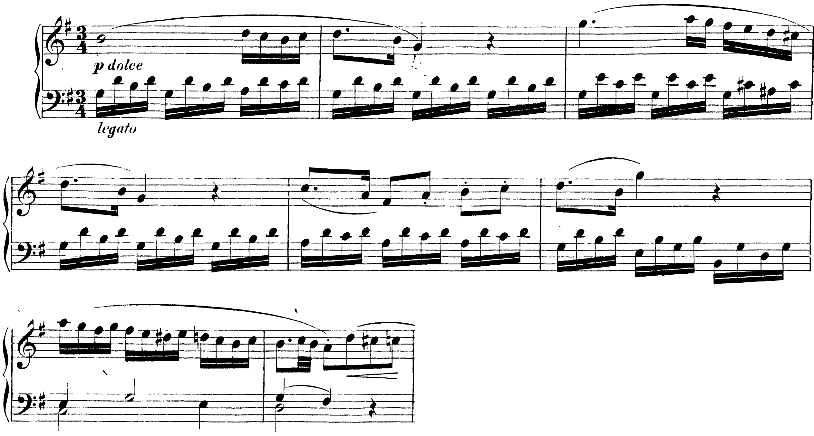
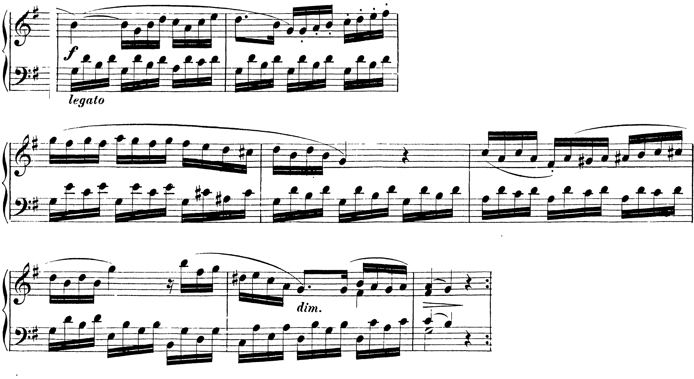

In un brano per pianoforte non ci sono le corone: le frasi si trovano dove la melodia si ferma, e la cadenza la dicono gli ultimi due bassi.
Una frase musicale è formata da uno o più motivi e la sua conclusione è generalmente indicata da una cadenza.
Ottó Károlyi, La grammatica della musica, p. 122
C8Successioni armoniche e cadenze, pp. 282–293; C14Il periodo, lezione 40, pp. 316–319.
| gli ultimi due bassi | la cadenza | il segno |
|---|---|---|
| V–I, soprano sulla tonica | autentica perfetta, CAp | il punto: il discorso è finito |
| V–I, soprano sulla terza o sulla quinta | autentica imperfetta, CAi | il punto e virgola |
| IV–I | plagale, CP | un punto, più morbido |
| …–V | sospesa, CS | i due punti: si aspetta il seguito |
| V–VI | d’inganno, CI | la virgola, o la lineetta |
Károlyi (La grammatica della musica, pp. 90–91): l’autentica ha «la stessa funzione del punto fermo»; la d’inganno dà un’impressione non conclusiva, come una virgola o una lineetta.
1 · Nella melodia: la nota lunga, la pausa, il punto dove un cantante respirerebbe. Lì finisce qualcosa. 2 · Gli ultimi due bassi prima della sosta: il grado e la sigla. 3 · Se il basso non fa una delle cinque mosse della tabella (resta fermo, o si muove di grado sotto un accordo rivoltato) è una sosta, non una cadenza: una virgola.
Nel corale la corona dice dove finisce la frase. In un brano per pianoforte la sinistra si muove sempre: qui suona un accordo spezzato in semicrome (il basso albertino). L’accordo è quello di tutto il gruppo di quattro semicrome, e il basso è la prima.

Il docente suona le otto battute due volte. Poi, sulla stampa: dove si ferma la melodia? Che cosa fa il basso in quel punto?
| dove | la melodia | il basso | che cosa è |
|---|---|---|---|
| b. 2 | scende al sol, poi la pausa | la–sol: il V con il la al basso, poi il I | sosta, virgola |
| b. 4 | di nuovo al sol, poi la pausa | resta sul sol per le bb. 3 e 4 | sosta, virgola |
| b. 6 | sale al sol, poi la pausa | sol–mi–si: I, VI, I6 | sosta, virgola |
| b. 8 | arriva al la; tre crome riportano all’inizio | do (b. 7) – re: IV–V | cadenza sospesa, due punti |
Nelle prime quattro battute il basso torna sempre al sol, e nelle bb. 3–4 non lo lascia mai (un pedale di tonica): la melodia si ferma due volte, ma l’armonia non chiude. Alla b. 7 la sinistra cambia scrittura, accordi tenuti al posto delle semicrome; nella b. 8 il sol scende al fa♯ sopra il re: è il V, e la frase resta aperta.

| battute | la parte | finisce con |
|---|---|---|
| 1–8 | antecedente: la domanda | cadenza sospesa, b. 8 |
| 9–16 | conseguente: la risposta | autentica perfetta, b. 16 |
Nella U7 il periodo era di otto battute, quattro più quattro. Qui ogni metà dura otto battute, e dentro ci sono le soste ogni due: la punteggiatura ha più livelli, come in un testo, dove dentro una frase lunga ci sono le virgole e alla fine il punto. Il conseguente comincia come l’antecedente e cambia solo la fine: è il modo più semplice di rispondere a una domanda.
Il docente suona le sedici battute di seguito. Alzate la mano alle virgole, e tutte e due alla fine di ogni metà.
Dove la melodia si ferma: nota lunga, pausa, respiro.
Gli ultimi due bassi: V–I punto (o punto e virgola), IV–I punto morbido, …–V due punti, V–VI virgola. Se il basso non fa una di queste mosse, è una sosta.
Domani, martedì 6/4, la V5.
Compiti per la prossima volta
1. Segna le battute in cui la musica si ferma. 2. Per ognuna scrivi gli ultimi due bassi e i loro gradi. 3. Scrivi la sigla della cadenza, oppure «sosta» se non è una cadenza, e il segno di punteggiatura.
Sul quaderno, a matita. La foto del lavoro finito va su Classroom. Nel Workbook: apri l’esercizio 11.25 ↗
Compiti per la prossima volta
n. 786 e n. 787 parlato · n. 788 e n. 789 cantato · n. 790 e n. 791 ritmico
Ogni pezzo a tempo, senza fermarti: il parlato a nomi, il cantato prendendo il primo suono dalla tastiera, il ritmico battendo la pulsazione.
Scrivi la melodia sul quaderno, in chiave di violino: otto battute in 2/4, do maggiore. Il primo suono è do. Prima il riferimento, poi tutto due volte, ogni coppia di battute due volte, il collegamento 1–4, 3–6 e 5–8, e tutto per controllare.
Il riferimento: accordo di tonica e primo suono
Il dettato · otto battute
Le sezioni (riferimento, tutto, le coppie, il collegamento) si ascoltano una per una e si ripetono quanto serve; le fasi fanno la procedura della classe, con gli annunci e le pause, da qualunque punto.
Sul quaderno scrivi in testa la sigla C1-D-U11-L7. Si corregge all’inizio della prossima lezione.
Compiti per la prossima volta
Continua la melodia fino a otto battute, in si♭ maggiore, chiave di violino, metro 2/4: le prime due sono date. Muoviti soprattutto per grado congiunto, e dopo un salto di quarta o più torna indietro per grado; metti almeno due salti fra la quarta e la sesta; chiudi sulla tonica, arrivandoci per grado. Ogni battuta piena, l’ultima con una nota sola. Poi cantala o suonala.
Sul quaderno, con la sigla C1-ME-U11-L7 in testa; la foto va su Classroom.
Sotto la melodia scrivi il basso, in chiave di basso: una nota per battuta, lunga quanto la battuta. La melodia è in la maggiore, metro 4/4. Per ogni battuta scegli fra la tonica (I: la–do♯–mi), la sottodominante (IV: re–fa♯–la) e la dominante (V: mi–sol♯–si): guarda la nota sul tempo forte e le note più lunghe, e prendi l’accordo che le contiene; scrivi sotto il numero romano. La prima e l’ultima battuta sono sulla tonica, la penultima sulla dominante.
Sul quaderno, con la sigla C1-BS-U11-L7 in testa; la foto va su Classroom.
Scritto: Soste e cadenze in otto battute (Workbook, esercizio 11.25), sul quaderno; la foto va su Classroom. Solfeggio dal quaderno di lettura: parlato n. 786, 787; cantato n. 788, 789; ritmico n. 790, 791 (a tempo, senza fermarsi). Dettato C1-D-U11-L7 dalla pagina della lezione (sezioni da ascoltare, o le fasi della procedura guidata), sul quaderno con la sigla. Melodia da continuare fino a otto battute (C1-ME-U11-L7). Basso sotto la melodia, una nota per battuta (C1-BS-U11-L7).
In classe
A nomi, a tempo, con la mano che batte. Chi si ferma riparte dalla battuta dopo.
Apri il n. 782 nel quaderno di lettura ↗ chiave di violino · 6/8
In classe
Si prende il tono dalla tastiera, si canta insieme; poi a gruppi.
Apri il n. 783 nel quaderno di lettura ↗ chiave di violino · 2/4 · fa maggiore
Apri il n. 784 nel quaderno di lettura ↗ chiave di violino · 3/4 · re minore
In classe
Tutti insieme, battendo la pulsazione. Poi a file, due battute a testa.
In classe
1. Segna le battute in cui la musica si ferma. 2. Per ognuna scrivi gli ultimi due bassi e i loro gradi. 3. Scrivi la sigla della cadenza, oppure «sosta» se non è una cadenza, e il segno di punteggiatura.
Dieci minuti insieme sul quaderno, alla lavagna il primo punto; il resto è il compito per casa.